How-To Guides
Jump to a guide
- Getting Started
- First-Run Tutorial
- Active Sources
- Find Source (Auto)
- Adding Custom Sources
- Predictive Movement
- Calibrate Delay
- Motor Kick-Start
- Multi-Toy Support
- Troubleshooter
- Boost
- Deadzone Limits
- Jitter Filter
- Endpoint Snap
- Invert
- Character Profiles
- Macro Switch
- Preset Strokes
- Activated Source Switch
- Debug Log & Filters
- Export OSC Session Log
- Hide, Show & Reorder Pages
- Settings
- License & Devices
Getting Started
From purchase to a moving toy in a few minutes. OSCGetsHandy runs on Windows 10 / 11.
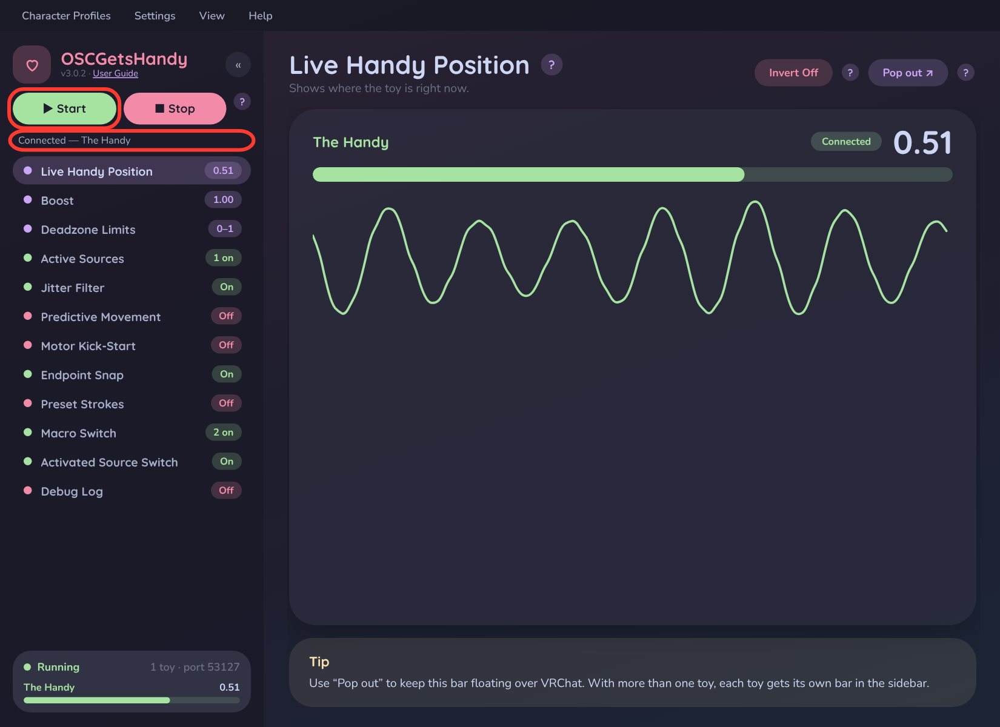
- Purchase on Payhip — your license key arrives by email.
- Install and open Intiface Central, start its server, and make sure your toy shows as Connected inside it.
- Run OSCGetsHandy and enter your license key and the email you purchased with (see License & Devices).
- In VRChat: Action Menu → Options → OSC → Enabled.
- In OSCGetsHandy press Start. The status under the buttons should change to Connected — [your device].
- Pick the VRChat signal that moves your toy with Find Source (Auto), or just follow the first-run tutorial.
First-Run Tutorial
A short guided walkthrough that opens the first time you launch the app: Welcome, Before You Start, Connect, Find Your Source, Jitter Filter, Predictive Movement and Motor Kick-Start.
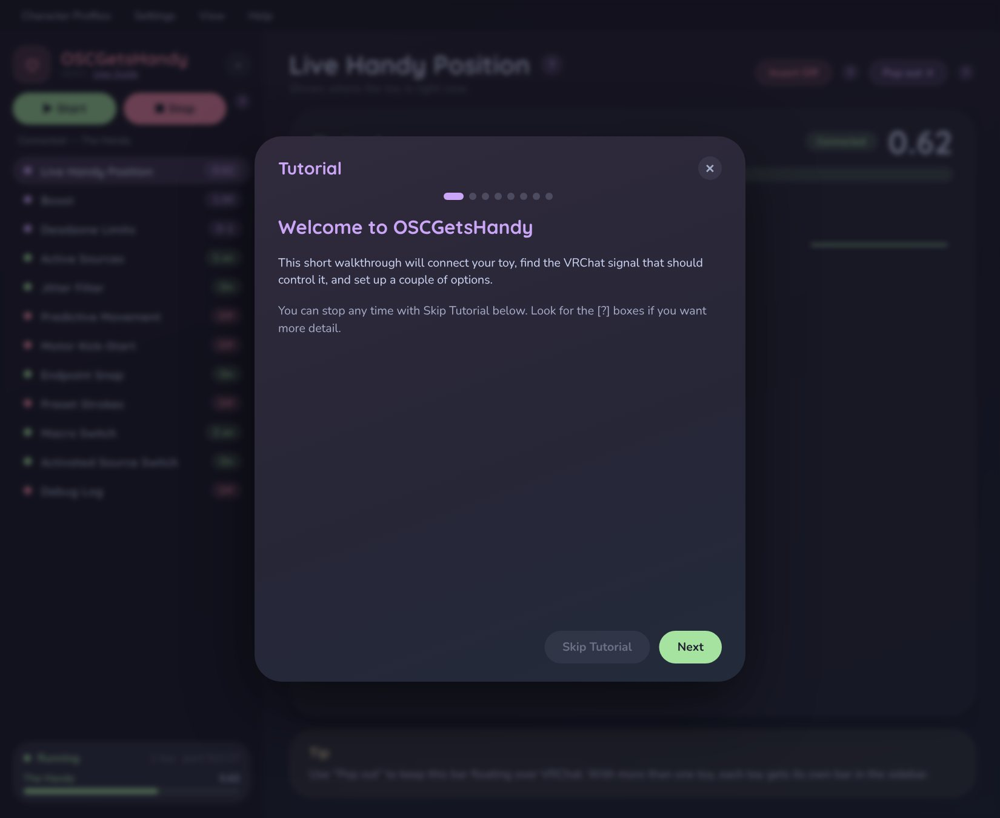
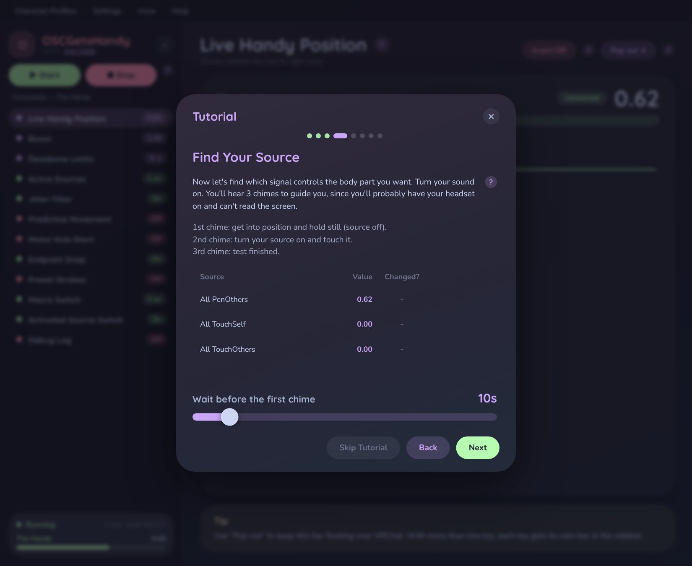
- Follow the steps and press Next. Look for the [?] boxes if you want more detail.
- Use Skip Tutorial at any time to stop.
- Handy users can skip the toy-specific steps — The Handy works well with the default settings. Lovense and other toys continue through them.
- To play it again later: Help → Restart Tutorial.
Active Sources
A source is a signal from your avatar that tells the toy how deep to go. VRChat sends lots of these all the time (they're called parameters) — here you choose which ones the toy follows.

- Open Active Sources from the sidebar.
- Under Built-in, switch on what you want: All PenOthers (how deep your avatar is inside someone else), All TouchSelf (you touching your own avatar, e.g. with your hand) or All TouchOthers (someone else touching you).
- The number on the right of each row is its live value — 0.00 is nothing, 1.00 is fully in or fully touched. Watch it move to confirm the signal is arriving.
- Need another signal? Add a custom one — see Find Source (Auto) and Adding Custom Sources.
- Custom sources can be switched on/off with their toggle, dragged (or moved with ▲ ▼) to change priority, renamed with ✎ and removed with ✕.
Only one source at a time
It works best with only 1 source on. If several are on and more than one is active at the same moment, the toy follows only the one highest on the page: All PenOthers, then All TouchOthers, then All TouchSelf, then your custom sources from top to bottom. The Debug Log shows a “Now following” line when it switches.
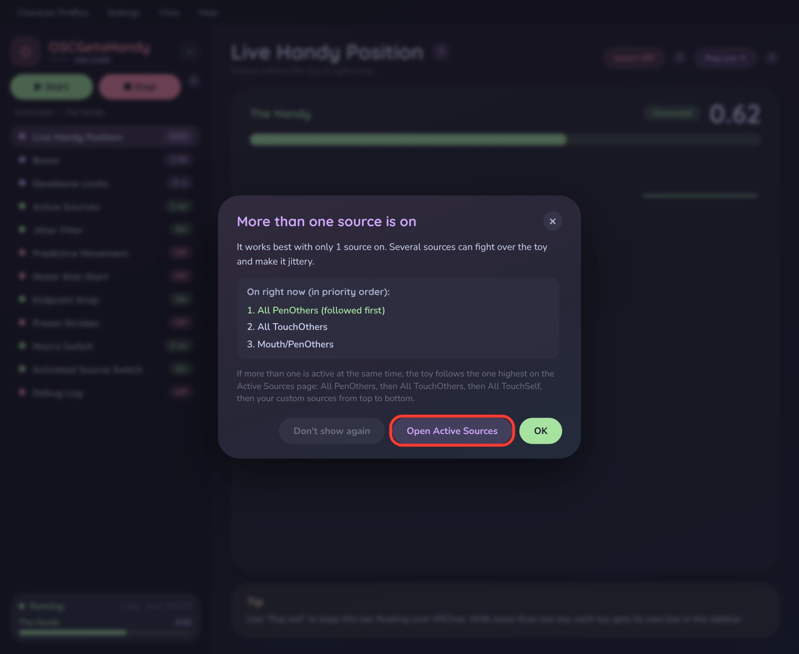
Find Source (Auto)
Not sure which signal controls your toy? The app can find it for you — and it works with your headset on, because it talks to you with chimes.
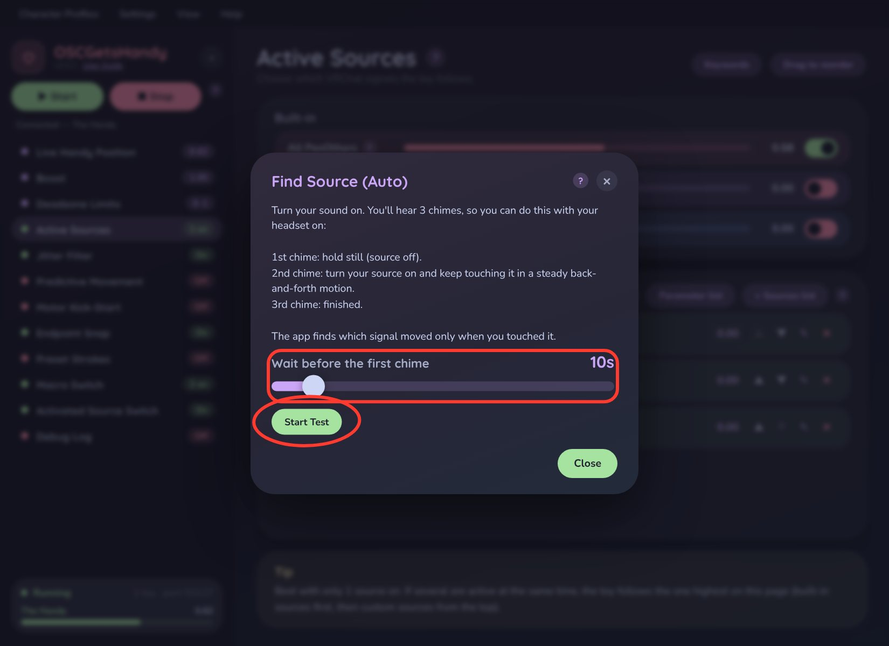

- Press Start in the main window and make sure OSC is on in VRChat — the app has to be running or nothing can be detected.
- Go to Active Sources and click Find source (auto).
- Turn your sound on. Use the Wait before the first chime slider to give yourself time to get into position, then press Start Test.
- 1st chime: hold still, with the source off. 2nd chime: turn your source on and keep touching it in a steady back-and-forth motion. 3rd chime: finished.
- The app lists the signals that moved only while you were touching, best match first. A ✓ keyword match means its name also looks like a depth signal — a good sign. Click Add next to the one that matches what you touched.
Adding Custom Sources
Four ways to add a signal that isn't one of the three built-in ones. All live on the Active Sources page.
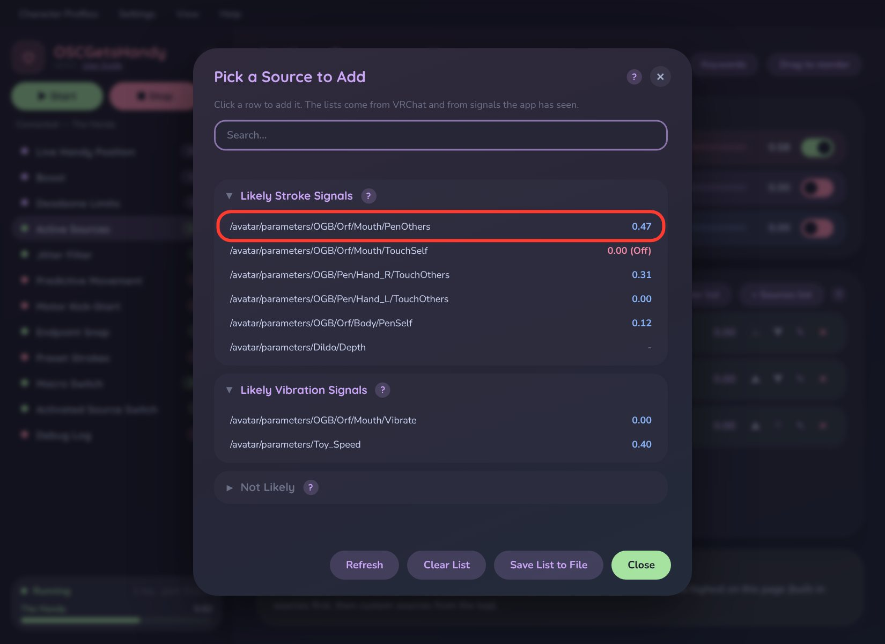
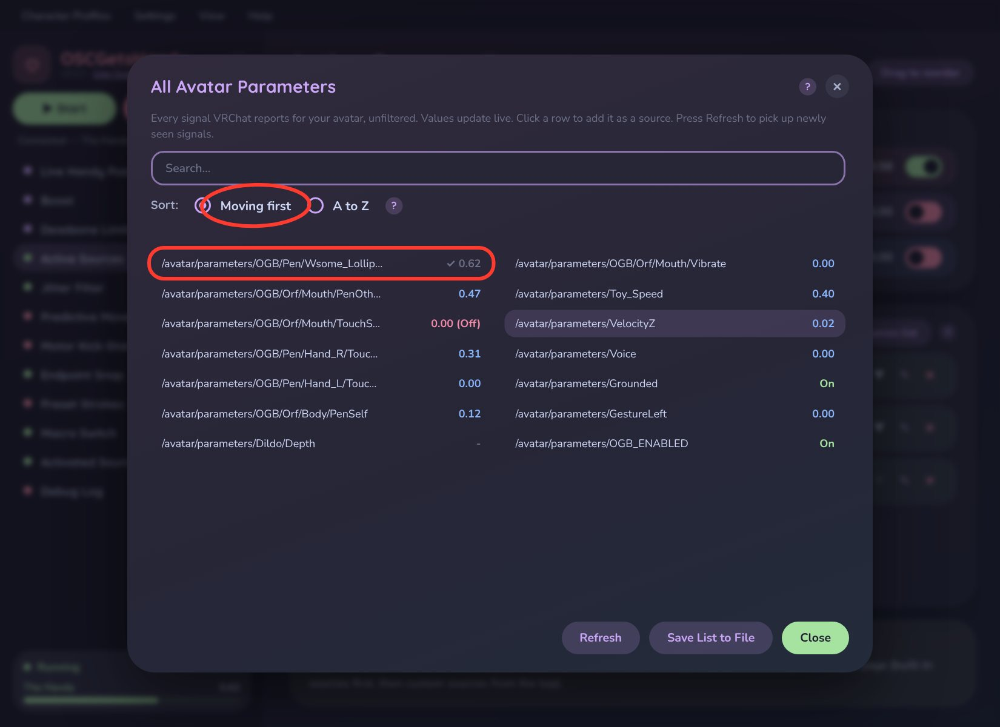
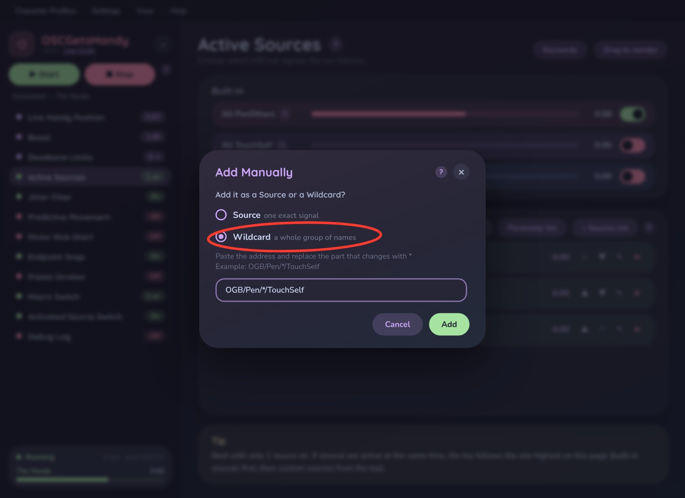
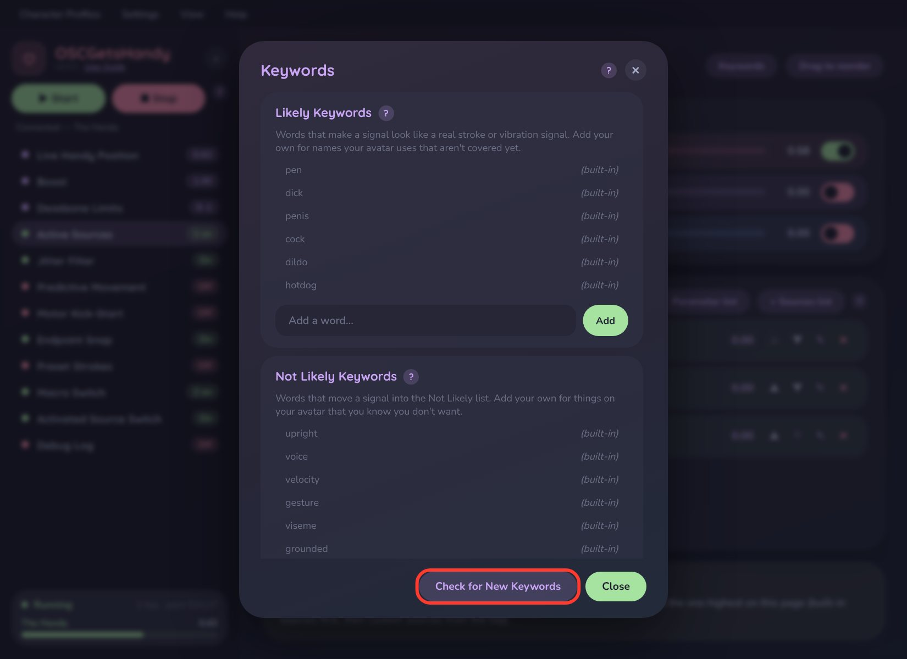
+ Sources list
Click + Sources list. Signals are sorted into Likely Stroke, Likely Vibration and Not Likely. Click a row to add it. A likely vibration signal can be paired with Preset Strokes to make the Handy stroke whenever the avatar vibrates.
Parameter list
Click Parameter list to see every signal VRChat reports for your avatar, unfiltered, with live values. Sort by Moving first (the ones that react when you touch your avatar) or A to Z. A tick means it's already one of your sources — click any row to add it.
+ Add manually
If you know a signal's exact name (copied from the Debug Log, say), click + Add manually. Choose Source for that one exact signal, or Wildcard for a whole group of names — replace the part that changes with a star, e.g. OGB/Pen/*/TouchSelf matches TouchSelf on any avatar.
Keywords
The app guesses which signals are real depth signals from words in their names (like “Pen” or “Touch”). If your avatar uses other words, click Keywords and add your own to the Likely or Not Likely list. Built-in words can't be removed, and Check for New Keywords offers any added in an update without touching your own.
Predictive Movement
Some toys, like the Lovense Solace, react a moment after they get a command. Predictive Movement learns the rhythm of your strokes and sends each move slightly early so the toy lines up with what you see.

- Open Predictive Movement and switch Enabled on.
- Set Send ahead by to roughly how late your toy reacts — measure it with Calibrate Delay, or tap a number on the Device Reference Sheet as a starting point. Too low and the toy still lags; too high and it moves before you do.
- Adjust Size tolerance and Speed tolerance only if it feels like it's fighting changes in your stroke. Higher adapts to your new movement faster; lower holds the old pattern longer and eases into changes.
- The first couple of strokes always pass straight through while it learns, and it works best with steady, repeating strokes. If you stop moving, it goes back to following you until it has learned your rhythm again.
Saved Presets
Under the sliders, press + Save current, name it (your toy's name works well) and it appears as a chip. Click the chip to load those settings again; ✎ renames it and ✕ deletes it. Handy when you swap between toys.
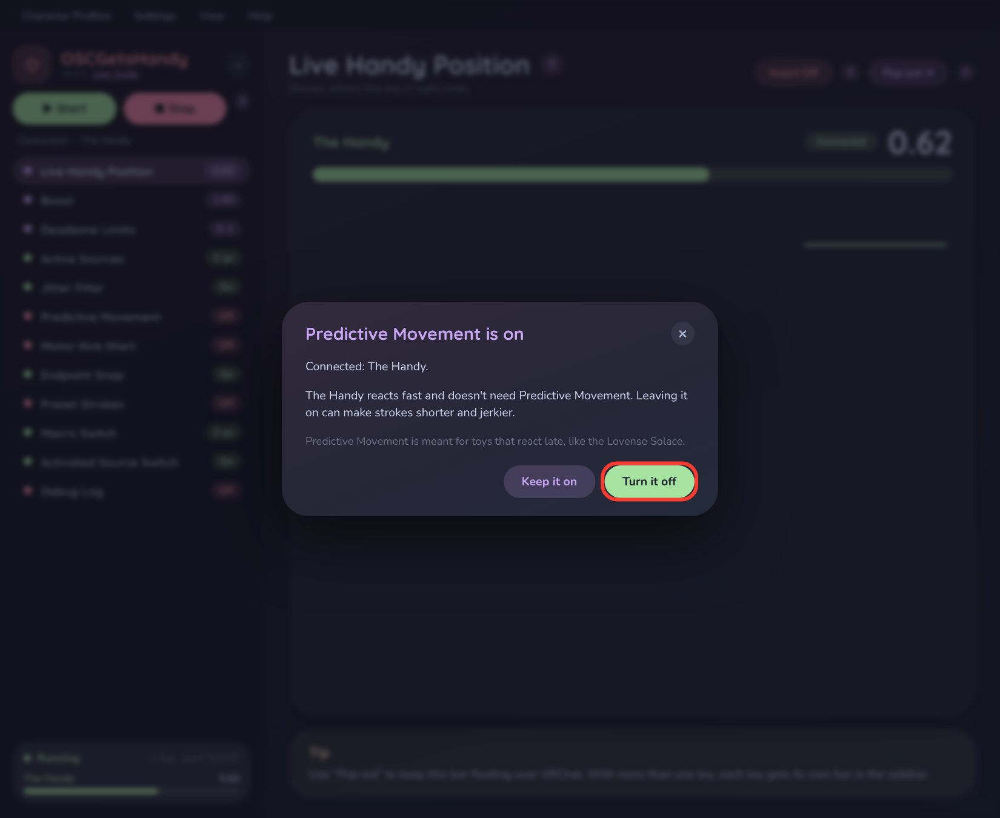
Calibrate Delay
Measures how late your toy reacts and sets Send ahead by for you. It uses VRChat's Toggle Crouch, so you never need to click a button with a headset on. PC only for now — do it in PCVR or desktop mode first.
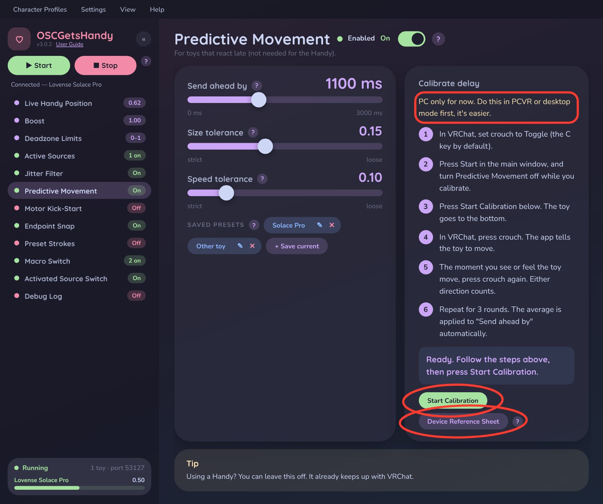
- In VRChat, set crouch to Toggle (the C key by default).
- Press Start in the main window and wait until your toy shows Connected. Turn Predictive Movement off while you calibrate.
- On the Predictive Movement page press Start Calibration. The toy goes to the bottom.
- In VRChat, press crouch. The app tells the toy to move.
- The moment you see or feel the toy move, press crouch again — which way it toggles doesn't matter.
- The toy goes back down. Repeat for 3 rounds in total. The average is applied to Send ahead by automatically.
Motor Kick-Start
Some toys (like the Lovense Solace) aren't told where to go — they're told how fast, and the motor needs a moment to get going. Kick-Start asks for extra speed right after each change of direction so strokes feel snappier.
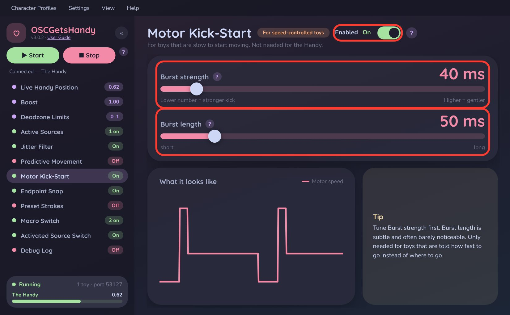
- Open Motor Kick-Start and switch Enabled on.
- Tune Burst strength first — a lower number means a stronger kick.
- Burst length is subtle and often barely noticeable — leave it at the default unless you want to fine-tune.
Multi-Toy Support
Run more than one device at the same time — for example The Handy and a Lovense Solace — each with its own settings and its own live position bar.

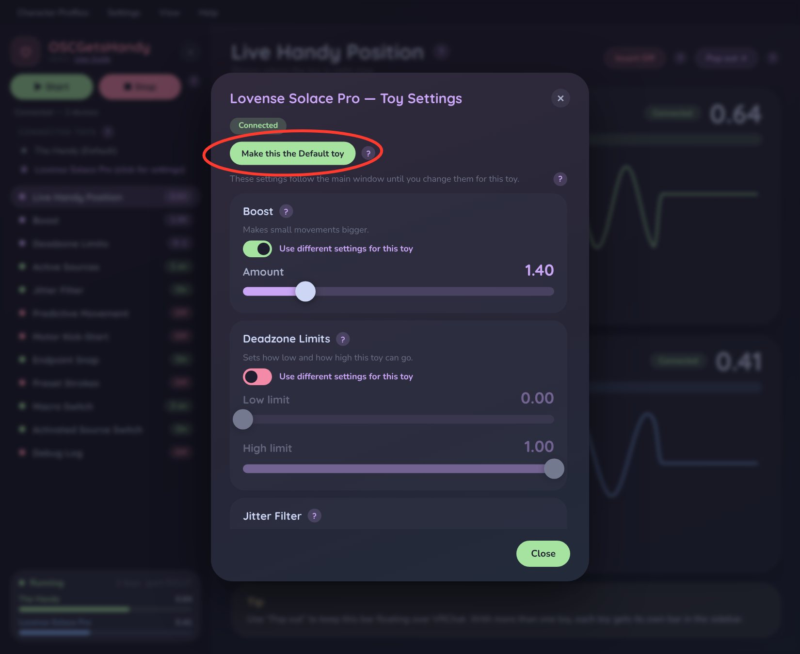
- Connect all your toys inside Intiface Central, then press Start. They appear under CONNECTED TOYS in the sidebar (shown only when more than one is connected).
- The toy marked ★ is the Default toy. It follows every setting in the main window and is the only toy that can use Activated Source Switch.
- Click any other toy (⚙ click for settings) to open its Toy Settings. For each feature, tick Use different settings for this toy to give it its own values; untick it to follow the main window again.
- Under Sources for this toy, tick or untick sources to choose what moves it. At first it copies the Default toy; press Go back to following the Default toy to return. One source can move several toys at once.
- Press Make this the Default toy to change which toy is the main one — the app remembers your choice.
Troubleshooter
A one-click self-check of the whole chain: your license, Intiface, your toy, and what VRChat is sending.
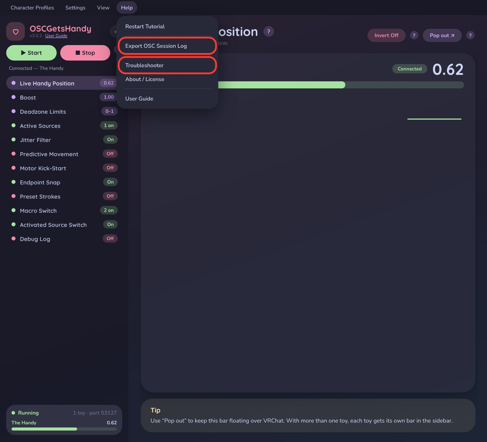

- Open Help → Troubleshooter.
- Green ✓ is fine, yellow is worth a look, and red ✗ is a problem — click a row to read Why and How to fix.
- Fix the first red item first; the ones after it often clear up on their own.
- Press Run Again after each change. Copy Report copies the results (without your license key) so you can email them to Devviously@gmail.com.
Boost
Some avatars never move all the way from 0% to 100%. Boost learns the range you've been using lately and stretches it, so strokes feel bigger — e.g. motion between 80% and 100% becomes about 40% to 100% at maximum.
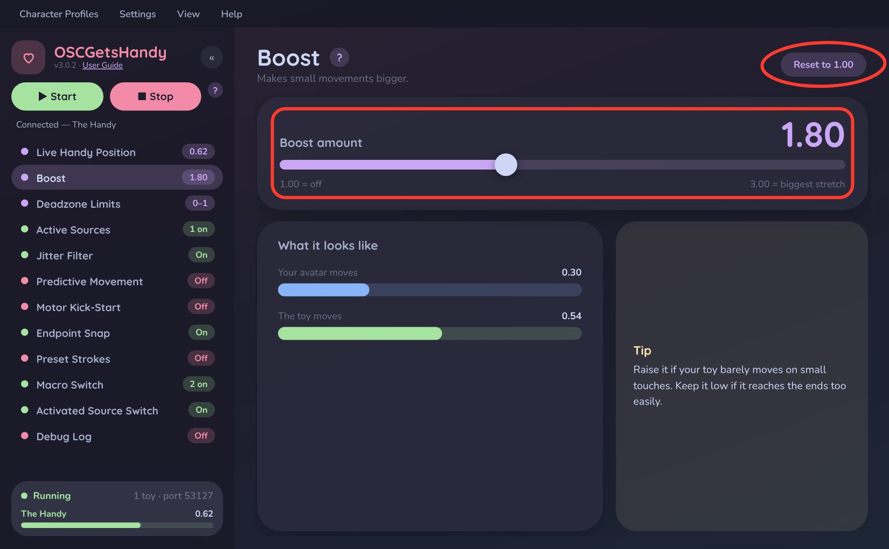
- Open Boost.
- Drag Boost amount up from 1.00 (off) toward 3.00 (biggest stretch). The preview shows what your avatar does versus what the toy does.
- Press Reset to 1.00 to switch it off.
Deadzone Limits
Sets the lowest and highest point the toy is allowed to reach — it will never go below the Low limit or above the High limit. Keep strokes in a range that feels comfortable.
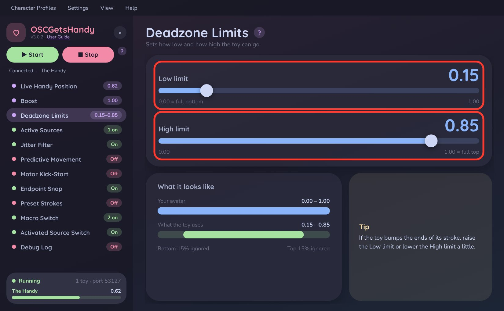
- Open Deadzone Limits.
- Set Low limit and High limit (0.00 is the very bottom, 1.00 the very top). The Low limit can never go above the High limit.
Jitter Filter
VRChat's signal can wobble a tiny bit even when nothing is really moving, which makes the toy twitch. The filter ignores any change smaller than the Threshold.
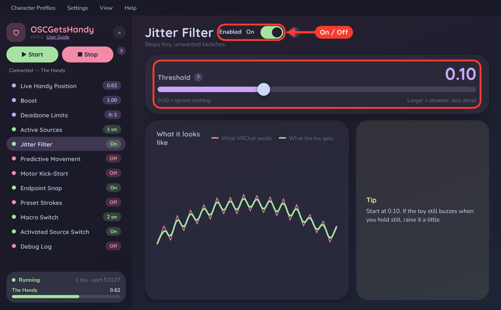
- Open Jitter Filter and switch Enabled on.
- Raise Threshold until the twitching stops — but no higher than needed, or small real movements get ignored too. The red line in the preview is what VRChat sends, the green line is what the toy gets.
Endpoint Snap
When the position gets close to the very top or bottom, Endpoint Snap sends it the whole way — so strokes actually reach the ends even if your avatar never quite reports a full stroke.
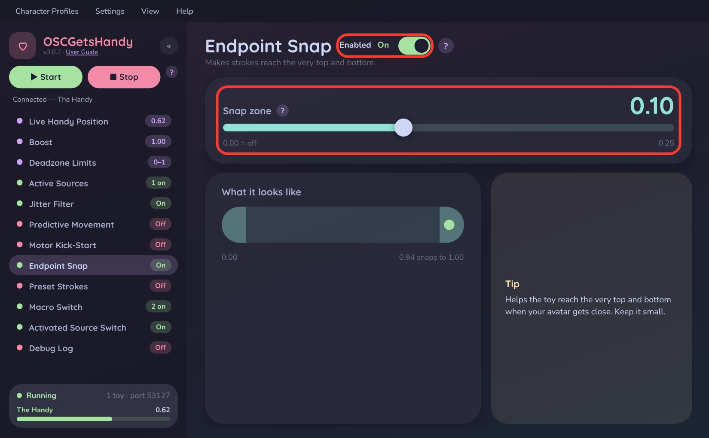
- Open Endpoint Snap and switch Enabled on.
- Set Snap zone — how close to an end counts as “close enough”. For example, 0.05 means anything within 5% of the top or bottom is sent all the way. Larger snaps more often.
Invert
Flips the direction of the toy. Turn it on if the toy moves up when it should move down — for example if you hold or mount it the other way around.
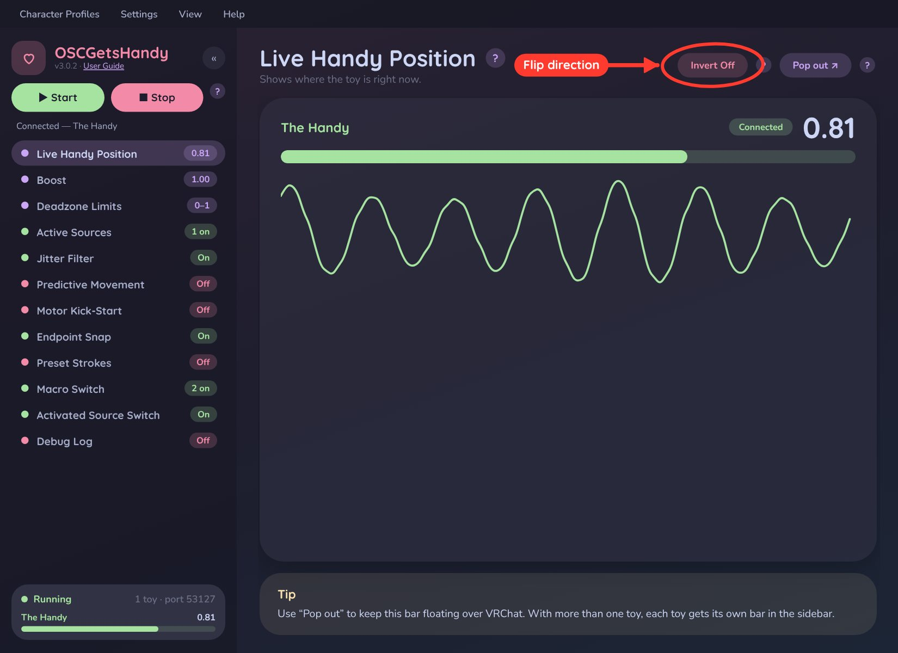
- Press the Invert button at the top of the Live Handy Position page (it shows Invert On / Invert Off) — or use Settings → Invert (toy held upside down). Both are the same switch.
Character Profiles
A profile remembers all your settings (Boost, Deadzone, Predictive Movement, sources and so on) for one avatar, so they come back automatically whenever you use that avatar.

- Open the Character Profiles menu at the top of the window.
- Detect Current Avatar finds the avatar you're wearing right now.
- Create New Profile saves your current settings as a profile linked to that avatar. Save to Loaded Profile updates it later; Rename and Delete manage it.
- Turn Profile Auto-Switch ON and the app loads the matching profile whenever you change into a linked avatar.
- The list at the bottom loads any profile by hand — the ✓ marks the one currently loaded.
Macro Switch
A macro lets something you do in VRChat change a setting in the app. Each macro has a trigger (the VRChat signal to watch), a mode (when it fires) and an action (what it changes).

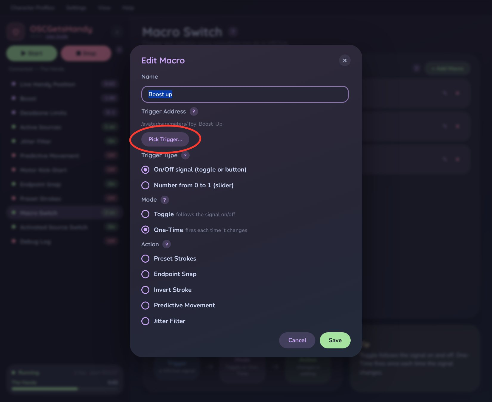
- Open Macro Switch and press + Add Macro.
- Give it a Name, then press Pick Trigger… and choose the VRChat signal. Signals only appear after the app has seen them, so flip the toggle in VRChat once first, then press Refresh.
- Trigger Type: On/Off signal for a toggle or button, or Number from 0 to 1 for a slider — it counts as ON once it reaches the value you choose.
- Mode: Toggle turns the action on when the signal turns on and off when it turns off. One-Time fires once every time the signal changes — use it for actions that aren't on/off, like Raise Boost or Switch Profile.
- Action: most actions switch a feature on or off. Raise/Lower Boost changes Boost by the amount you choose, and Switch Character Profile loads one of your saved profiles. Press Save.
- Untick a macro to pause it, use ✎ to edit it and ✕ to delete it.
Preset Strokes
Plays a steady up-and-down motion instead of following your avatar's real position. Handy for vibration-only signals, which have no depth to follow.
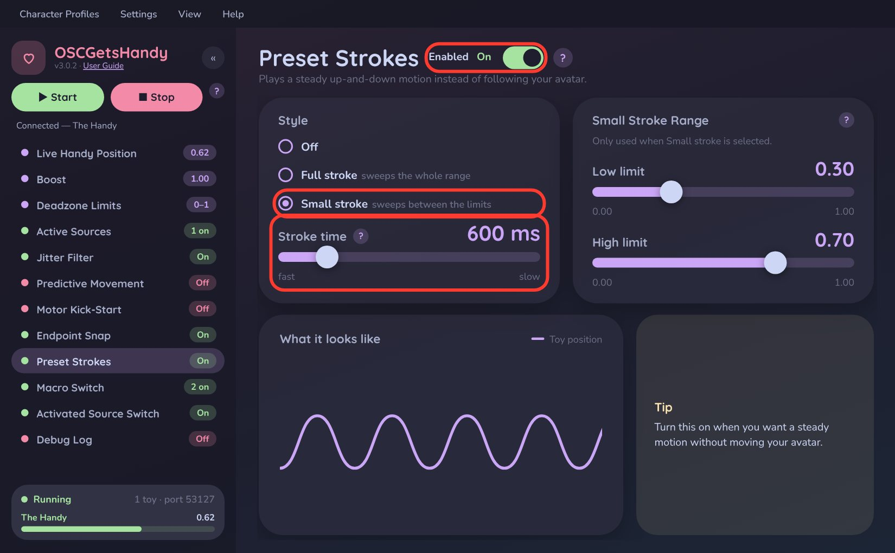
- Open Preset Strokes and switch Enabled on.
- Choose a style: Full stroke sweeps the whole range, Small stroke sweeps between the two limits you set under Small Stroke Range.
- Set Stroke time — how long one sweep takes one way, in milliseconds. Lower is faster; the fastest allowed is 50 ms.
- Make sure a source is active (see Adding Custom Sources) — it only plays while a source is sending data, stops where it is when the data goes quiet, and carries on in the same direction when data returns.
Activated Source Switch
Helps when your avatar has several sources and the wrong one ends up controlling the toy. You pick a gesture in VRChat (for example, sitting down and standing up five times quickly); the app checks which of your custom sources was moving most just before, works out which one you're really touching, and locks the toy onto it.
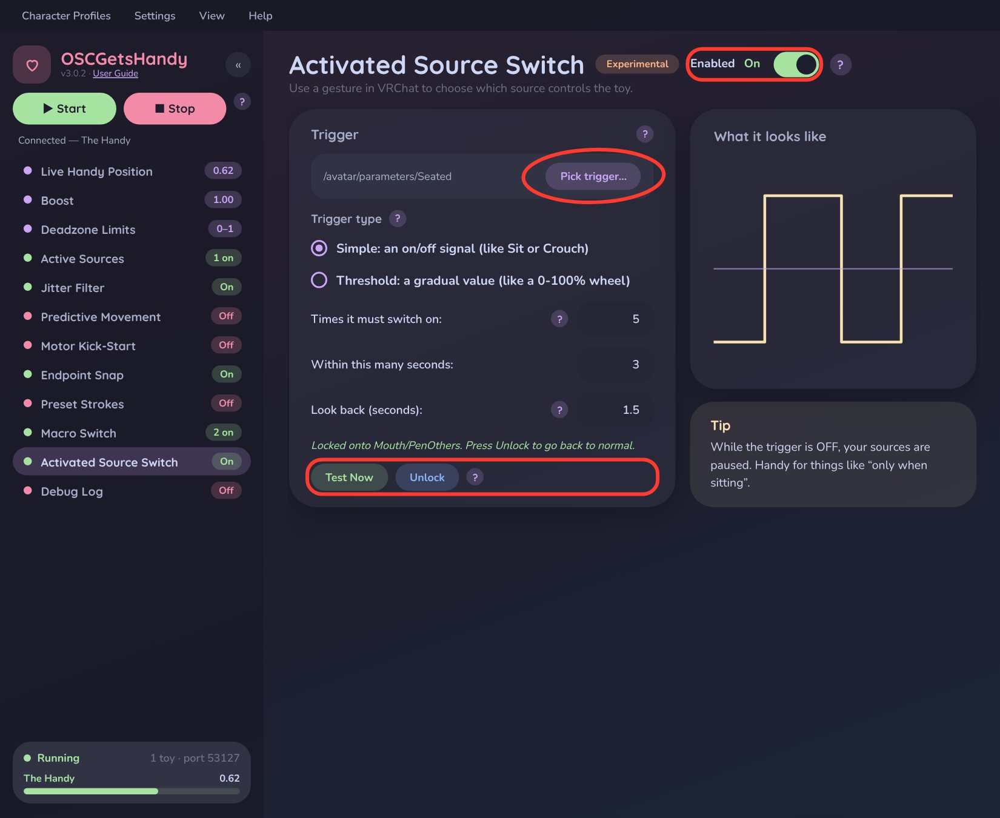
- Open Activated Source Switch and switch Enabled on.
- Press Pick trigger… and choose the VRChat signal that starts it, like Sit or Crouch (do the gesture in VRChat once first so the app sees it).
- Trigger type: Simple for an on/off signal, or Threshold for a gradual value (like a 0–100% wheel).
- Set Times it must switch on within this many seconds (for example 5 times within 3 seconds), and Look back — how many seconds the app looks back to decide which source you're touching.
- Press Test Now to run the switch right away. Press Unlock to release the lock so all your sources work normally again.
Debug Log & Filters
A live feed of what the app is doing and every signal it receives from VRChat. Use it to find a signal's name or work out why something isn't working.
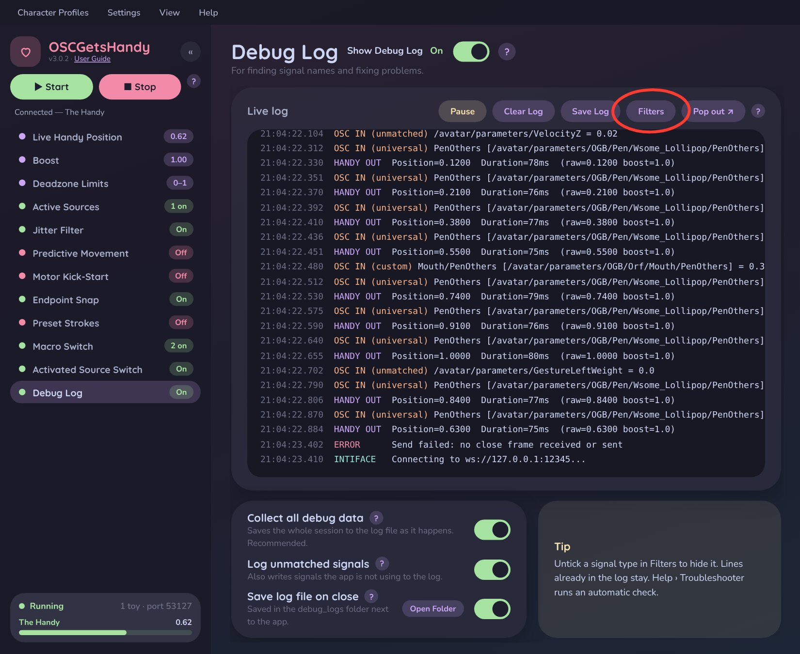
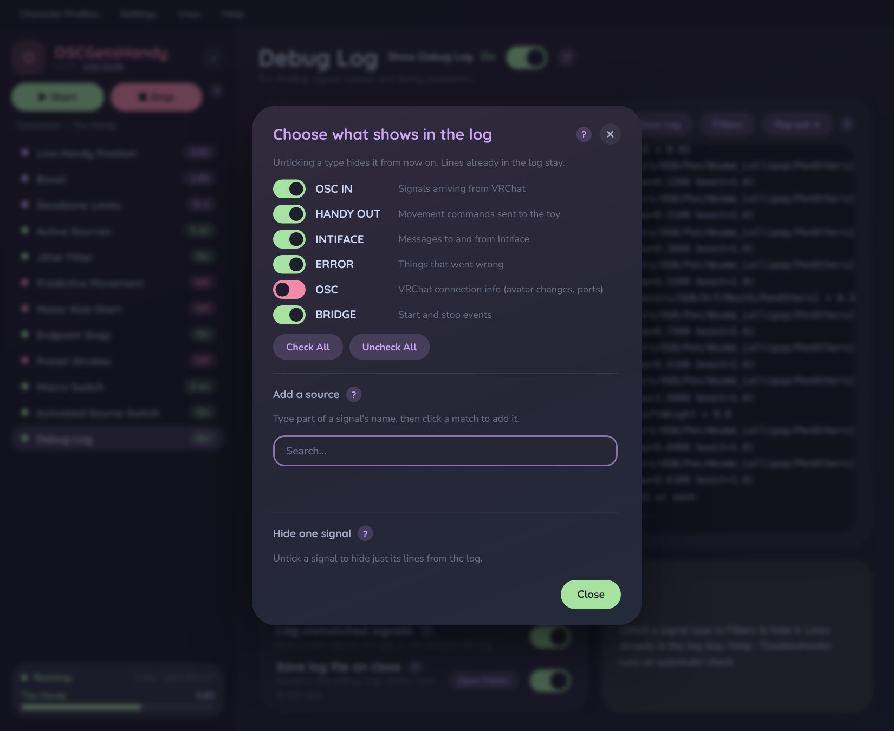
- Open Debug Log from the sidebar and switch Show Debug Log on.
- Pause freezes the display so you can read or copy (lines that arrive meanwhile are still saved). Clear Log empties it. Save Log saves a text file. Pop out ↗ opens it in its own window.
- Filters chooses which kinds of line show — OSC IN, HANDY OUT, INTIFACE, ERROR, OSC and BRIDGE — and lets you hide a single noisy signal. Unticking hides it from now on; lines already in the log stay.
- Collect all debug data (on by default, recommended) writes the whole session to the log file as it happens, so nothing is cut off even if the app crashes.
- Log unmatched signals also shows signals the app isn't using — useful for finding the exact name for + Add manually or Macros.
- Save log file on close saves each session into a
debug_logsfolder next to the app (the newest 20 are kept). Press Open Folder to go there, and send the newest file to support if something went wrong.
Export OSC Session Log
Saves a record of everything in a session as a CSV file — handy for sending to support.
- Open Help → Export OSC Session Log.
- Choose where to save the file. A message confirms how many entries were saved and where.
- Email it to Devviously@gmail.com together with a description of what went wrong.
Hide, Show & Reorder Pages
Hide the pages you never use and arrange the rest in the order you like.
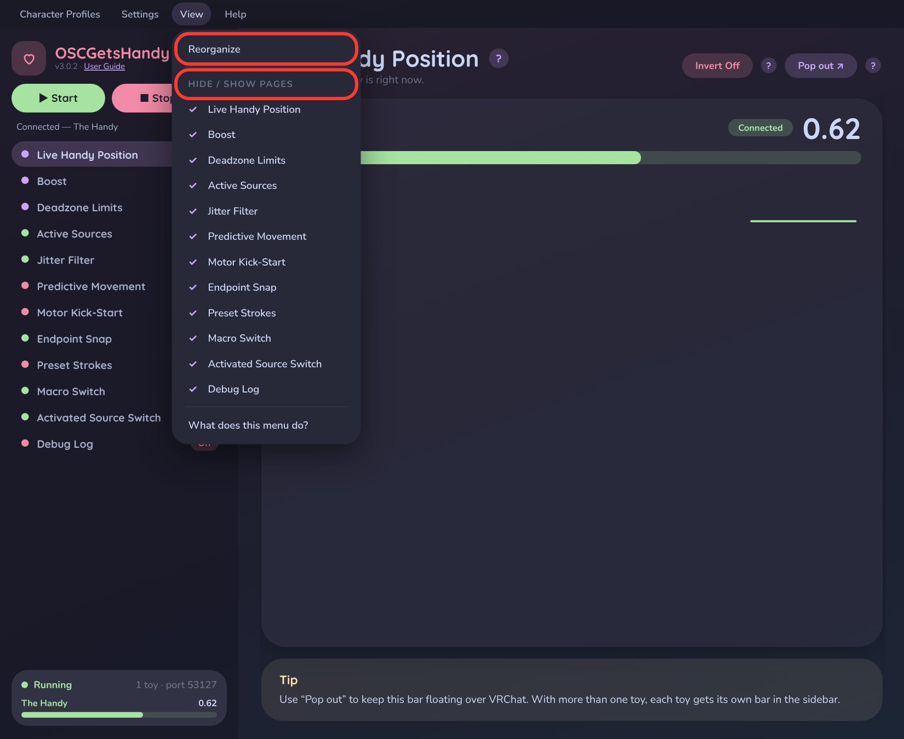
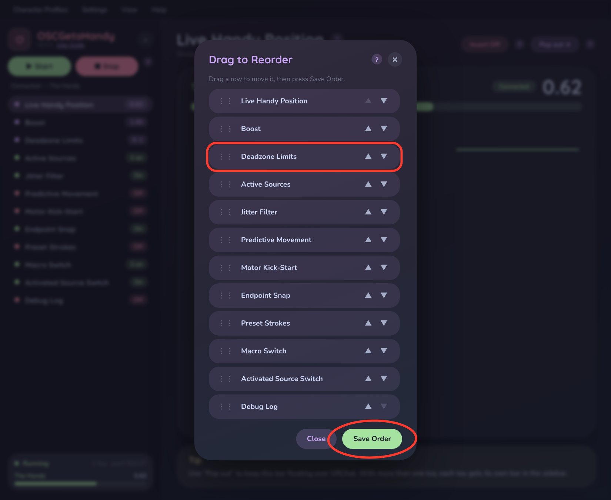
- Open the View menu. Tick or untick a page under HIDE / SHOW PAGES — at least one page always has to stay visible.
- Choose Reorganize, drag a row (or use ▲ ▼) to move it, then press Save Order. Hidden pages still appear there marked “(Hidden)”.
- The sidebar's « button collapses it to a slim icon strip with a green or red dot on each icon — your choice is remembered.
Settings
Open Settings from the menu bar.
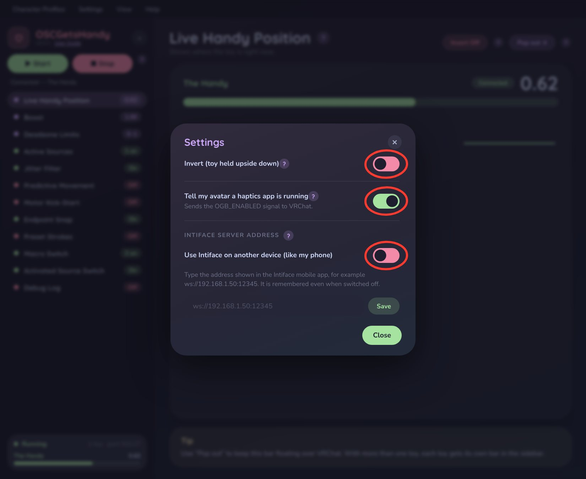
- Invert (toy held upside down) — the same switch as on the Live Handy Position page.
- Tell my avatar a haptics app is running — many avatars only switch on their touch and depth sensors once a haptics app says one is running. This sends that signal (
OGB_ENABLED, the same one OscGoesBrrr sends): ON when your avatar is found, OFF when you press Stop or quit. If your avatar's sensors never react, make sure this is on. - Use Intiface on another device (like my phone) — normally the app talks to Intiface Central on this PC. To use Intiface on your phone, switch this on, type the address shown in the Intiface mobile app (for example
ws://192.168.1.50:12345), press Save, then press Stop and Start. Your PC and phone must be on the same network.
License & Devices
Your license key is emailed to you after purchase. Each license can be used on a limited number of PCs at once.
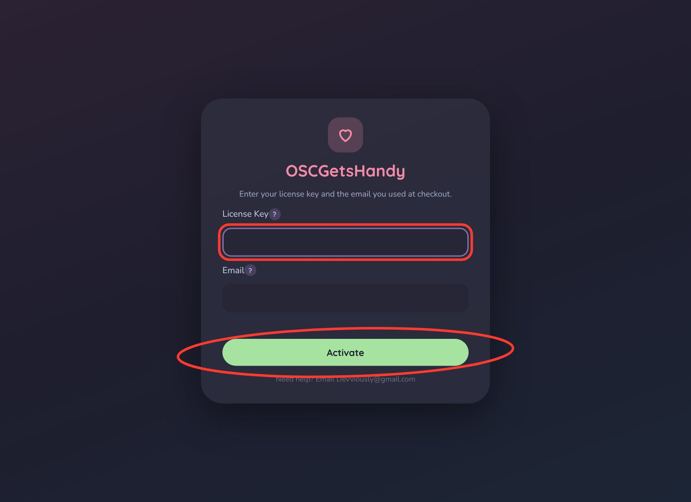
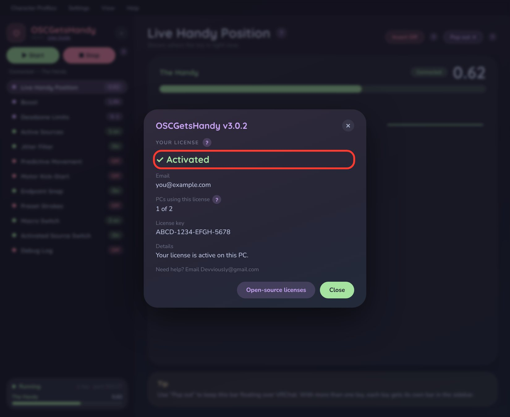
- On first launch, paste your License Key (it looks like XXXX-XXXX-XXXX-XXXX) and the Email you used at checkout, then press Activate.
- To check your status later: Help → About / License shows whether this PC is allowed to use the app and how many PCs your license is using. The check is online, so it needs an internet connection.
- Replaced a PC or reinstalled Windows and hit your limit? Email Devviously@gmail.com and a slot will be freed up.